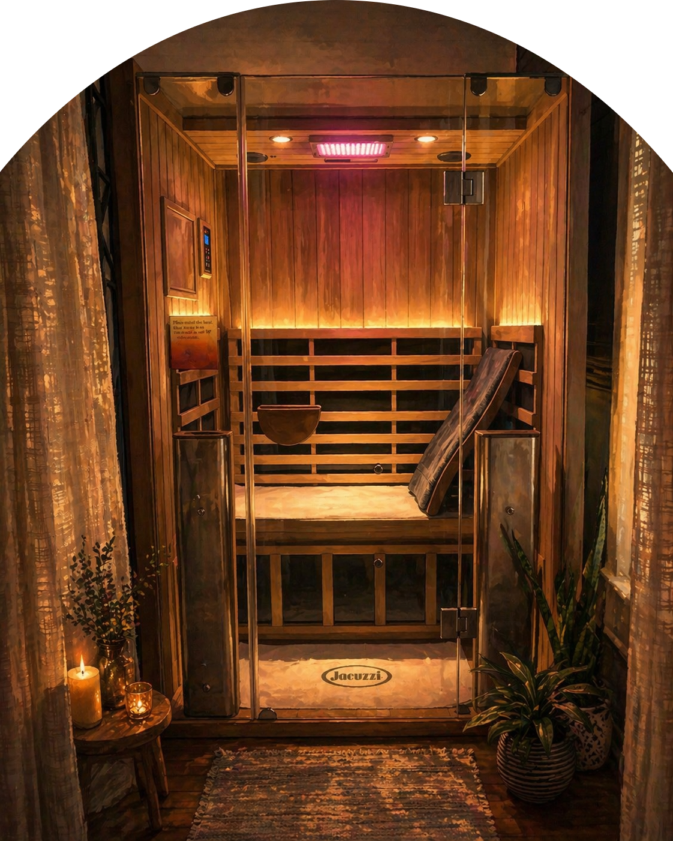

Why Use a Sauna in the Summer?
A loving response to the seasonal classic: "But it's already a sauna outside."

Every June, like clockwork, we hear it: "Why would I use the sauna? It's already a sauna outside." Fair. Truly. Carrboro in July does have a way of making your sunglasses fog up before you have emotionally prepared for the day.
But outdoor heat and sauna heat are not the same thing. One is something you endure while walking from your car to the grocery store. The other is intentional, timed, clean, quiet heat that gives your body a clear signal: release, circulate, sweat, reset.
Summer heat is chaos. Sauna heat is a ritual.
Outside heat is mixed with humidity, errands, traffic, direct sun, stress, and the weird pressure to act normal while your shirt is slowly giving up. Sauna heat is different because you choose it. You step in hydrated. You sit still. You breathe. You leave when the dose is complete.
That choice matters. A sauna session gives your nervous system a defined beginning, middle, and end. Instead of "I am trapped in weather," the body gets "I am practicing heat in a controlled space." That is a very different experience.
It keeps your heat tolerance trained
Used thoughtfully, sauna can help your body stay familiar with heat. Think of it like a gentle practice field for the season. You are not trying to prove anything. You are giving your body a short, predictable heat exposure, followed by a cool-down, water, and a slower re-entry into the day.
That rhythm can make summer feel less like a daily ambush. You still need shade, hydration, and common sense. But your body may stop treating every warm afternoon like breaking news.
It supports circulation without another workout
Sauna raises your heart rate and increases circulation while you are sitting still. That is one reason people often describe it as a passive recovery tool. It does not replace movement, but it can pair beautifully with summer movement, especially when outdoor workouts feel harder because of heat and humidity.
If your summer routine includes hiking, running, cycling, pickleball, gardening, chasing children, or simply existing near pavement, sauna can be a way to support recovery without adding more impact to your joints.
It helps you sweat on purpose
Sweating in a parking lot is rude. Sweating in a sauna is a ritual. The difference is not just aesthetic, though honestly, the towel and cedar help. In the sauna, sweating happens in a clean, contained environment where you can fully relax into it.
A good summer sauna session feels like wringing out the day. The heat builds, the mind slows, the shoulders drop, and the body remembers how to move fluid again. Then you shower, drink water, and feel like you have been rebooted from the inside.
It can make cold feel better
Summer is an excellent time to pair sauna with a cool shower or cold plunge. Heat opens the body up. Cold brings it back into focus. Together, they create contrast, which is why so many people leave feeling clearer, lighter, and oddly proud of themselves.
If you are new to cold, summer is also a friendly entry point. The world outside is warm. Your body is already willing to believe cold might be useful. Start simple: sauna, cool rinse, breathe, repeat if it feels good.
It protects the habit you built
This is the practical one. Wellness routines are easier to keep than rebuild. If sauna helps your sleep, soreness, mood, or stress in January, it probably does not become useless in July. It just needs a summer version.
That might mean shorter sessions. More water. More electrolytes. Earlier appointments. A cool shower after. Less intensity, more consistency. The goal is not to suffer for wellness points. The goal is to keep the ritual alive in a way that respects the season.
A simple summer sauna rhythm
- Hydrate before you arrive. Do not begin already depleted from the day.
- Keep it shorter. Ten to fifteen minutes can be plenty in summer.
- Cool down slowly. Take a cool shower, sit for a minute, or pair with cold plunge if that is your thing.
- Add electrolytes. Especially if you have been outside, sweating, drinking caffeine, or moving a lot.
- Skip the heroics. If you feel dizzy, lightheaded, nauseous, unusually weak, or just "off," get out and cool down.
Who should be more careful?
Hot days affect people differently. The CDC recommends paying extra attention to hydration, overheating symptoms, and heat risk, especially for people who are pregnant, over 65, managing heart conditions or other chronic conditions, taking certain medications, or spending long stretches outside in the heat.
Sauna is generally well tolerated by many healthy people, but it is still heat. If you are not sure whether sauna is right for you, check with your clinician first. And please do not use sauna to "push through" summer heat stress. Sauna should leave you restored, not wrecked.
The short answer
Use the sauna in summer because intentional heat is different. Because recovery still matters when it is hot. Because your nervous system still needs a quiet room. Because sweating on purpose feels better than sweating in line at the co-op. Because the ritual works best when you do not disappear from it for three months.
And because, yes, it is already a sauna outside. Which is exactly why your body might appreciate a better one.